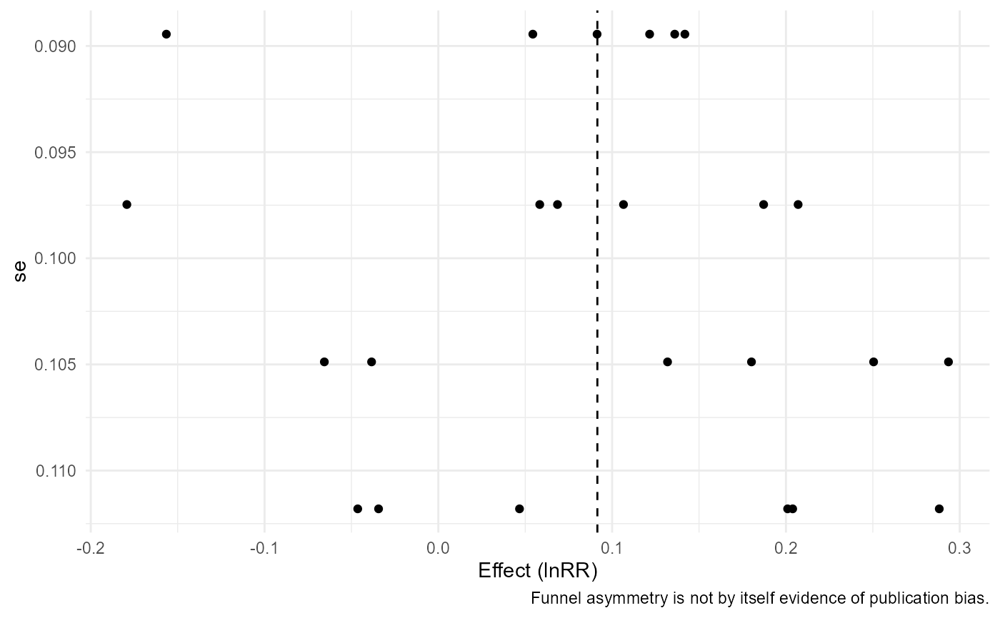
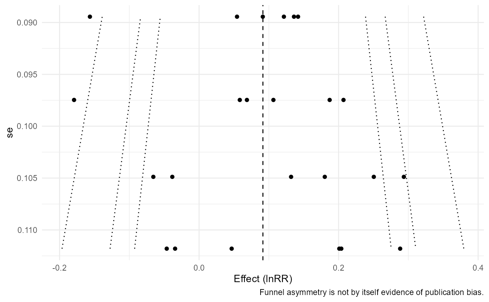

Draw standard or contour-enhanced funnel plots
apm_funnel.RdDraw standard or contour-enhanced funnel plots. This conservative manual snapshot is regenerated from the authoritative roxygen source before release.
Examples
# Example 1: standard funnel plot.
apm_funnel(apm_fit(agri_effects_benchmark))

# Example 2: contour-enhanced funnel plot.
apm_funnel(apm_fit(agri_effects_benchmark), contour=TRUE)

# Example 3: precision-axis interactive plot when plotly is available.
if (requireNamespace("plotly", quietly=TRUE)) apm_funnel(apm_fit(agri_effects_benchmark), yaxis="precision", interactive=TRUE)